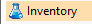
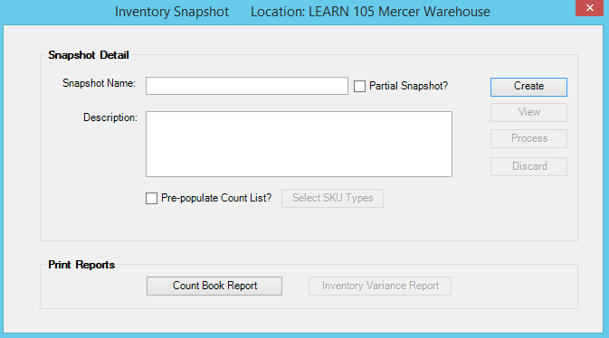
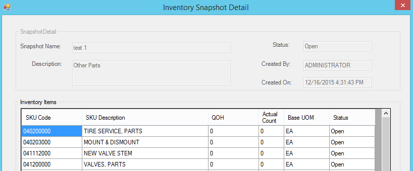
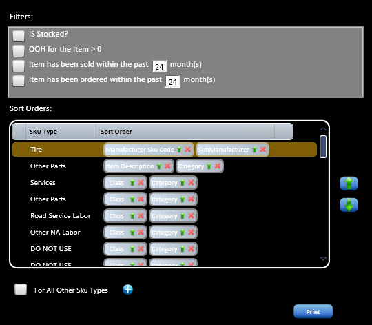
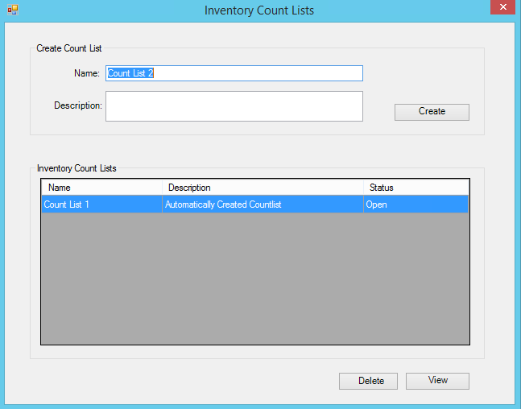
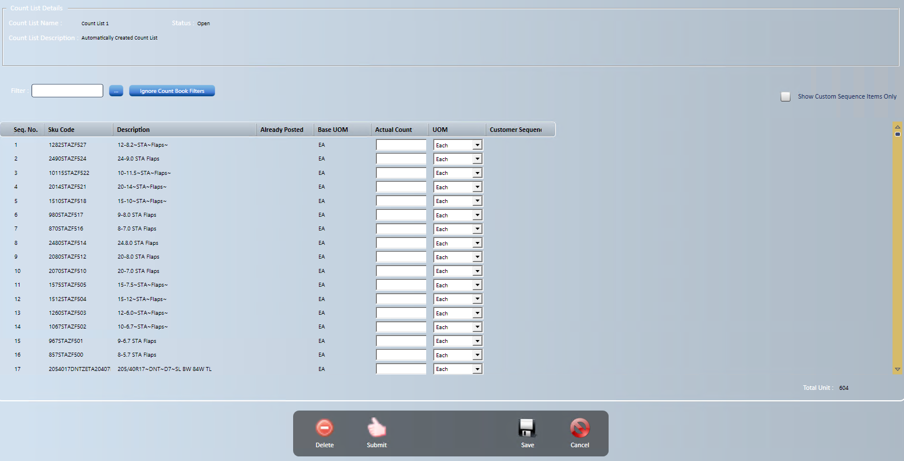
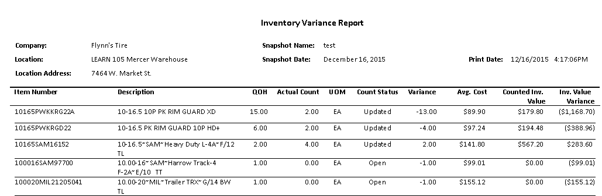
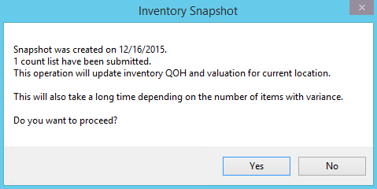

Physical Inventory Count
Provides ability to create a current inventory snapshot, create count book report for manual count or scan inventory, generate variance report and automatically create and process inventory adjustment.

Select from home screen. Select Inventory Snapshot from Start a Task
ScreenshotCreate Inventory Snapshot
- Verify logged into location of desired snapshot
- Enter desired Snapshot Name (i.e. location number and date)
- If Partial Inventory (specific Sku types), check box and selected desired Sku types
- Highlight from Available SKU Types and select
- Hold CTRL key and select multiples
- Hold SHIFT and select range
- Select Done
- Highlight from Available SKU Types and select
- Check Pre-Populate Counts Lists if desired (if manual count not recommended; display QOH)
 Select SKU Types
Select SKU Types
- Highlight from Available SKU Types and select
- Hold CTRL key and select multiples
- Hold SHIFT and select range
- Select Done
- Select

- Highlight from Available SKU Types and select
- Automatic display of snapshot detail (Not needed)

- Select Back to return to Inventory Snapshot screen
- Once snapshot has been saved additional options will display
- will discard snapshot
- will be used to process inventory adjustment
OPTION 1
Manual Count Sheets

Populate filter information/sort orders if desired- Is Stocked? - This is not inventoried check box
- QOH for the Item >0 and <0 – reduces size of list but may create more handwritten items that would have been on list if this checkbox was left unchecked
- Items sold/ordered within the past XX month(s)
- Set sort orders by Sku type
- – Deletes Sort Item From List
- – Changes Sort Order
- Check box For All Other Sku Types if not all are listed
- Select
 to add Sort Items
to add Sort Items - Use to move Sku types in desired order
- Select Print
- Select Print within report display window

OPTION 2
Mobile Scanning Device
-
- Log into Mobile Application
- Xxxxxxxxxxx
Select from home screen. Select Inventory Count List from Start a Task

- At Create Snapshot, Count List 1 is automatically created
- If multiple count lists are needed
- Enter desired Name of count list
- Enter Description if desired
- Select Create Countlist
- Will display in list below
- If multiple count lists are needed
 Note: This would be needed if multiple employees will be counting or can be used for the variance report research so it can be tracked.
Note: This would be needed if multiple employees will be counting or can be used for the variance report research so it can be tracked.
- Select Green Arrow to right of count list to populate quantities (same order as count report)
- Select Red Minus to delete count list if needed

- Enter actual counts or verify scanned counts
- If blank, will NOT update inventory
Note: Only leave blank if not counting. If counting and none found, enter 0 so inventory will be updated accordingly.
- Save when complete and review prior to submitting if needed
- Select Submit
- This will display count list and move Quantities from Counted column to Already Posted column.
- As additional count sheets are created and submitted “Already Posted” column will update, and that column total will be used on the variance report.
- IMPORTANT: Additional count sheets should be populated with ONLY what was counted by that team or in the variance review NOT total counts.
Note: Use filter to narrow list. Use to enter count for an item that was not on original count list (i.e. 0 QOH item). Use ellipses for advanced search (generally not used). If count sheet was filtered to only include items with quantity, this is a good tool to add all handwritten items that had 0 on hand.
- Create Variance Report
- Select from home screen. Select Inventory Snapshot from Start a Task
- Select
- Populate filter/sort information (Suggest to use the same as countbook)
- Is Stocked? - This is not inventoried check box
- QOH for the Item >0 – reduces size of list but may create more handwritten items that would have been on list if this checkbox was left unchecked
- Items sold/ordered within the past XX month(s)
- Set sort criteria
- Select ellipsis in Edit column
- Check items for applicable sort columns by and select if descending
- Highlight and use Up/Down to arrange columns
- Select Close when complete
- Toggle “Include items with no variance also” if desired
- Use to move Sku types in desired order
- Select Save and Print

- Review Variance Report
- Create additional Count Sheets if necessary and submit
- Reprint Variance Report and repeat process until complete
- At Inventory Snapshot screen, Select process
- Inventory adjustment will be created and automatically processed

- Select Yes
- Once posted, will display dialog box designating Inventory Adjustment ID
- Select OK
- Print adjustment if needed to attach to variance report (Qty and Dollars should match)
- FIND: Inventory Adjustment and enter ID number